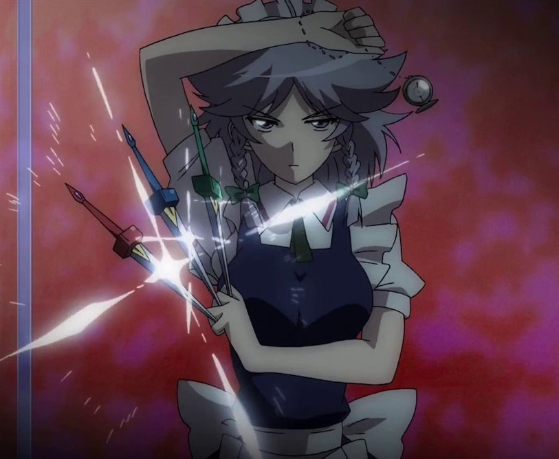
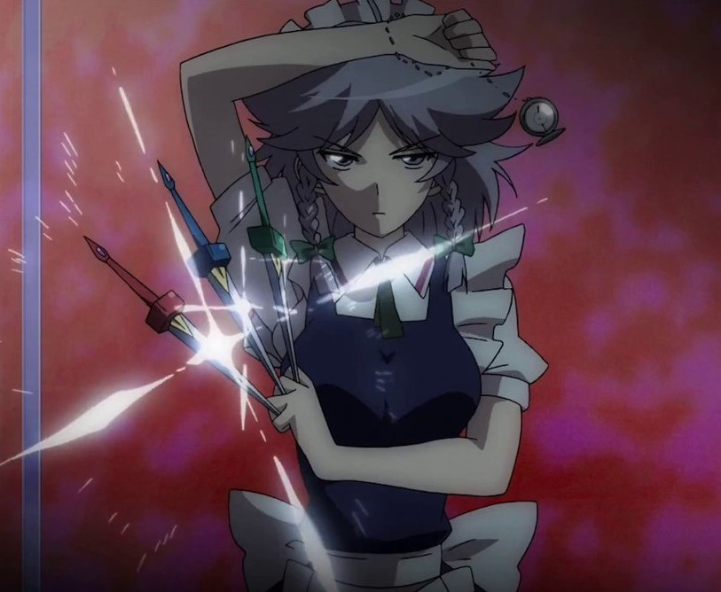

Reimu Hakurei (博麗 霊夢 Hakurei Reimu) is the main protagonist of the Touhou Project series along with the deuteragonist, Marisa Kirisame. As the shrine maiden of the Hakurei Shrine, she manages the Hakurei Border of Gensokyo and exterminates troublesome youkai. She is really intelligent, more fast than the light, probably 20yo

Marisa Kirisame (霧雨 魔理沙 Kirisame Marisa) is an ordinary human magician who specializes in light and heat magic and currently resides in the Forest of Magic. She has a compulsive mania for collecting things, and is considered to be the deuteragonist of the Touhou Project series along with the main protagonist, Reimu Hakurei. She is very informal, friend of everyone (human and no humans), just more fast than a human, probably 16-20yo
 

Sakuya Izayoi (十六夜 咲夜 Izayoi Sakuya) is the Chief Maid who serves Remilia Scarlet, the head of the Scarlet Devil Mansion. She is the only human living in the Scarlet Devil Mansion. Sakuya possesses the ability to manipulate time, where she's able to control the flow of time, such as speeding up time, slowing it down, erasing it, and stopping time altogether. She can also compress the flow of time to make both past and future to exist at the same time, making the same object from different timelines be in many places simultaneously Click here for more info.


Flandre Scarlet (フランドール・スカーレット Furandooru Sukaaretto) is the younger sister of Remilia Scarlet and a vampire who lives at the Scarlet Devil Mansion. She first appeared as the Extra stage boss of Embodiment of Scarlet Devil, and has appeared as a playable protagonist in Touhou Gouyoku Ibun.

Remilia Scarlet (レミリア・スカーレット Remiria Sukāretto) is the main antagonist of Embodiment of Scarlet Devil. She's a vampire and the owner and head of the Scarlet Devil Mansion, the mistress of Sakuya Izayoi, Hong Meiling and the fairy maids. She's also the older sister (and guardian) of Flandre Scarlet.

Utsuho Reiuji (霊烏路 空 Reiuji Utsuho) is the main antagonist of Subterranean Animism. She's one of Satori Komeiji's pets and a Hell raven who has lived in the underground world since before it was separated from Hell. Her job is to regulate the flames of the Hell of Blazing Fires.

Koishi Komeiji (古明地 こいし Komeiji Koishi) is a satori, and Satori Komeiji's younger sister. She initially appeared as the Extra stage boss of Subterranean Animism, later as a playable character in Hopeless Masquerade, Urban Legend in Limbo, and Antimony of Common Flowers.